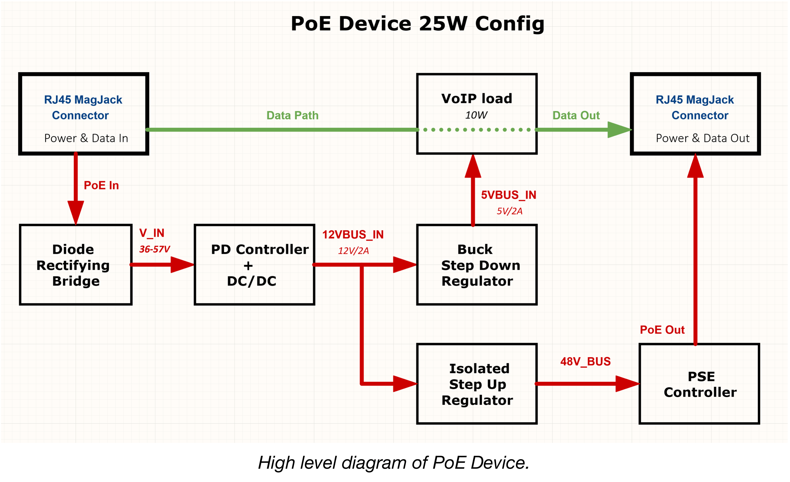
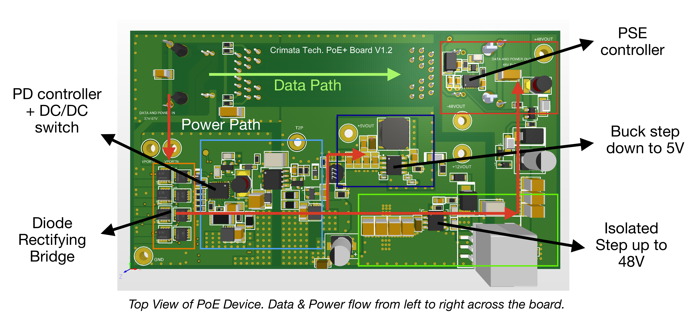
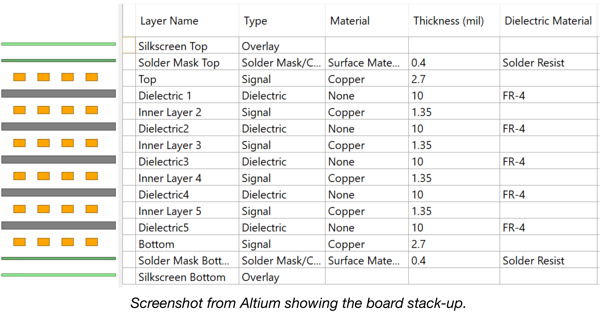
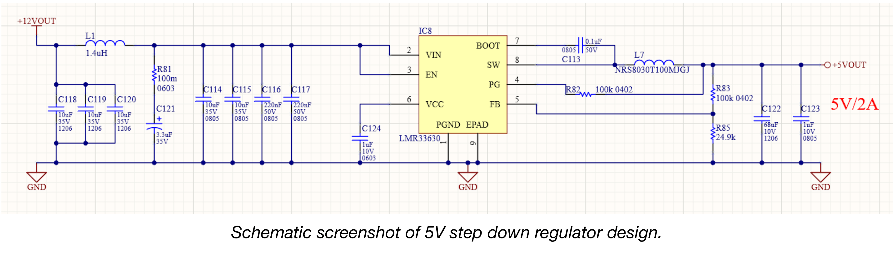
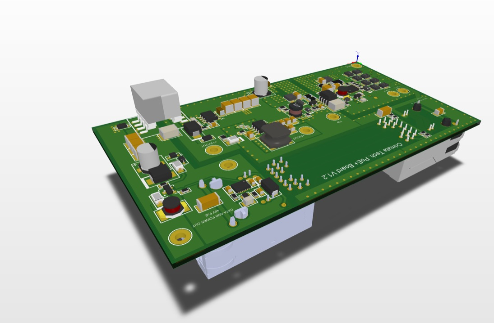

Hardware Design
PoE Relay Device
By Enrique Hernandez & Andrew Gundersen
Abstract
A power over ethernet (PoE) technology that enables multiple PoE-compatible devices to be connected and powered on one line. Traditionally, adding a PoE device to an existing system required it to source its own power from a power outlet. For systems with isolated PoE devices, this can become a wiring nightmare. The technology proposed eliminates this problem by enabling devicesto only take as much power as needed, then relay the remaining power to the rest of the devices down the line. The technology stack for the solution consists of a diode rectifying bridge, a powered device (PD) controller, an isolated step-up regulator, a buck step-down, and a power-sourcing equipment (PSE) controller. These circuits are integrated on a six-layered printed circuit board. In conjunction with my research is a fully designed PCB that demonstrates this technology.
Design Flow
The design flow consisted of a specification, architecture, design, simulation, schematic, layout, and prototype cycle. Flexibility and customization where the biggest priorities during the design process. After multiple iterations, the final result is intended to be highly customizable in order to be easily implemented into a wide range of devices. Altium Designer software was used for the design.
Specification
The specifications for the PoE Relay Device were simple. It had to be IEEE 802.3 compliant, have two ethernet ports (input and output), and be able to efficiently support a wide range of load devices (security cameras, VoIP devices, etc).
Architecture

The underlying building blocks of the device are switching regulators and PoE controllers. Early on, it was decided that the benefits of switching regulators (lower power dissipation and output flexibility) would allow the device to efficiently support a wide range of loads. Additionally, the device architecture requires both a PD and PSE controller. These two controllers give the device its core functionality ( ability to send and receive power ). Also, a rectifying diode bridge is added for higher overall efficiency in the power transfer between the ethernet magnetics and the PD controller. Lastly, Ethernet ports with integrated magnetics were chosen for their compactness and efficiency.
Design

The design is simple, a PD controller negotiates for power from the
main switch. Once the connection is verified, the switch sends power
to the PD controller. The PD controller is integrated with an isolated
DC/DC switch that steps down the voltage to 12V. The voltage can be
stepped down/up as needed. However, note that the DC/DC must be in an
isolated configuration in order to meet product specifications.
Then, a buck step down regulator is used to bring down the
voltage to 5V, as the main power supply for the load. Again, this can
be changed depending on the application requirements. Simultaneously,
an isolated step up regulator brings up the voltage to 48V. This is
only needed if a PSE controller is required. The PSE controller, which
is interfaced with the ethernet port magnetics, negotiates with the
neighbor device (VoIP load in this example). If the PSE controller
identifies the neighbor device as PoE enabled, then it injects the
requested power into the outgoing ethernet port magnetics.
Furthermore, the board dimensions are 4.5’’ by 2.5’’ with an overall
thickness of 62 mils. The board stack-up is defined by 6 layers. Layer
2 and layer 5 are designated ground planes, while layers 3 and 4 are
signal planes. The top and bottom layers are poured with copper to
mimic plane behavior with the purpose of containing EMI.

Simulation
LT powerCad and powerPlanner software suite was used to quickly validate the board architecture and power budget calculations. These tools became extremely valuable during the design of the switching regulator power supplies. They reduced the design effort and sped up the design time, while also allowing for the designs to be quickly validated and optimized.
Schematic & Research
The process for schematic creation first began by researching and
identifying existing components to build the device with
(transformers, IC’s, etc). Next, data-sheets and other relevant
supporting documents were analyzed to ensure the component was
properly implemented into the design. Lastly, component notes were
updated with manufacturer comments, layout suggestions, and any other
useful information. If supporting components were needed, they would
be documented as well.
Once a component was chosen, the next step was to build the
component(s). This meant generating a schematic symbol, footprint, 3D
model, etc. that satisfied the component’s data-sheet. Once finished,
the component would be added to the project’s component library and
then into the project schematic. Altium Designer and a mySQL database
were used to make this process as efficient and painless as possible.
The database library required additional effort to set up. However, in
the long run, bill of materials and schematic generation became more
efficient and even somewhat enjoyable.

Layout
Before the layout process began, a high level component placement plan
was generated. The goal was to group alike components together and
decide where the main components would go. Additionally, the PCB
manufacturer was contacted in order to determine manufacturing
capabilities and limitations. Next, design rules were tweaked to
account for said capabilities. Additionally, the component notes from
the schematic process were also used to alter design rules. The
purpose of this pre-layout process was to make the board layout
process as smooth as possible.
Next, the main component footprints would be compiled into the PCB
file and placed in accordance with the plan. Once placed, supporting
components would be compiled and organized around their main
components. Next, components would be wired to each other, taking into
account schematics, notes, and EMI principles. Altium Designer
Software was used to ensure impedance matching and proper routing of
high speed signals. After component placement, copper planes were
drawn and filled. Lastly, the design was analyzed for any possible
design flaws, EMI red flags, incorrect placements, etc.
Protoype & Manufacturability
The prototype demonstrated in this paper is designed to support a VoIP
phone device load. It is built upon a PoE+ Powered Device controller
with an integrated switching regulator. The controller is configured
in an isolated Flyback topology capable of delivering 25W (12V/1.9A)
at 88% efficiency (22.8W available). Additionally, the prototype
allows for a 10/100/1000 Mbps data transfer between devices. An
additional 5V synchronous buck step-down regulator with low EMI is
used as the load's power supply. Finally, the PSE controller uses an
isolated step up regulator, configured in a flyback topology at 48V,
to power the neighboring device.
This prototype design can be manufactured at a cost of
$95.96 per board. Although the price is high, this is just a prototype
version with special requests such as a controlled dielectric, a
minimum 0.001’’ plating for holes, and a specified flammability
rating. Additional steps can be taken to reduce price such as
decreasing board size, optimizing component sourcing, etc. However,
these steps would require more resources (lab, heat transfer
simulation, etc.)
Final Results

The final product is a manufacturable IEEE 802.3 compliant PCB design capable of powering a wide range of devices through PoE technology. Additionally, the device is capable of supporting 10/100/1000 Mbps data transfer between devices. The power management architecture in the board is extremely flexible and easily configurable. This allows the device to be configured for a wide range of loads (13W to 90W). In order to customize, one can choose to change the DC/DC switch, and the buck step down regulator. Additionally, if a PSE is not needed, it can be taken out of the design.
Conclusion
The results from this project demonstrate the viability of PoE technology to power multiple PoE enabled devices on one line. Additionally, the ease of customization makes this technology an attractive alternative to those who might need to power different types of devices on a single line. However, there are room for improvements. For example, component placement is spread out due to the thermal characteristics of the transformers. Therefore, having access to prototyping resources would have improved the overall PCB layout. If someone, has the desire to implement this technology, they would need to integrate their circuit into the PoE Device data path.